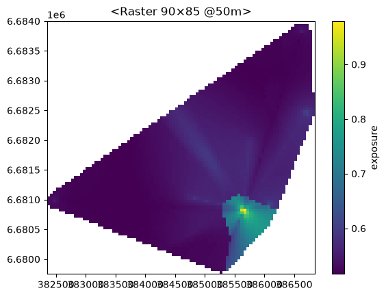
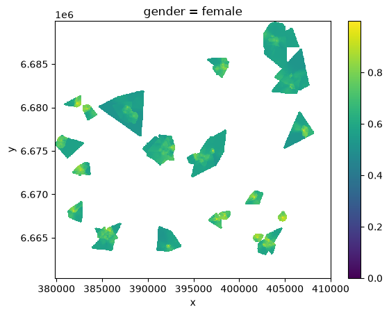

Getting started#
This page takes you from “a table and a folder of raster files” to a first analysis. Every code block below is executed when the documentation is built, so the output you see is real.
1. The data you have#
We use a small synthetic example that comes with the package (entityraster.synth): 200 people with an age, income and gender,
and one activity-space raster each. In your own work the table would be your survey and the folder your exported rasters.
import tempfile
import pandas as pd
import matplotlib.pyplot as plt
import entityraster as er
from entityraster import synth
data = synth.make_dataset(tempfile.mkdtemp(), n=200, seed=1) # creates the example files
survey = pd.DataFrame(data.people.drop(columns=["geometry", "activity_space", "path"])).rename(columns={"person_id": "uid"})
rasters = data.out_dir / "rasters" # a folder with p00000.tif, p00001.tif, ...
survey.head(3)
| uid | age | income | gender | employed | neighbourhood | radius_true | n_places | |
|---|---|---|---|---|---|---|---|---|
| 0 | 0 | 20 | 10164.448222 | female | True | 7 | 1447.104739 | 10 |
| 1 | 1 | 30 | 15331.117575 | female | True | 7 | 1255.618890 | 10 |
| 2 | 2 | 56 | 97302.122509 | female | True | 13 | 1326.218180 | 12 |
sorted(p.name for p in rasters.glob("*.tif"))[:3]
['p00000.tif', 'p00001.tif', 'p00002.tif']
2. Attach the rasters to the table#
entityraster.embed() joins the files to the table by id (never by row position):
gdf = er.embed(survey, rasters, on="uid", pattern="p{uid:05d}.tif", column="activity_space", index="uid")
gdf.head(3)
| age | income | gender | employed | neighbourhood | radius_true | n_places | activity_space | raster_extent | |
|---|---|---|---|---|---|---|---|---|---|
| uid | |||||||||
| 0 | 20 | 10164.448222 | female | True | 7 | 1447.104739 | 10 | <Raster 66×84 @50m> | POLYGON ((403750 6663050, 403750 6667250, 4004... |
| 1 | 30 | 15331.117575 | female | True | 7 | 1255.618890 | 10 | <Raster 89×63 @50m> | POLYGON ((405350 6662150, 405350 6665300, 4009... |
| 2 | 56 | 97302.122509 | female | True | 13 | 1326.218180 | 12 | <Raster 73×100 @50m> | POLYGON ((383650 6673500, 383650 6678500, 3800... |
What happened: the file name p00200.tif was matched to the row with uid == 200 because of the pattern; the new column is called
activity_space; uid became the index; and, because the survey table had no geometry, the result is a GeoDataFrame whose geometry is the
extent of each raster. Anything that did not match is reported:
type(gdf).__name__, gdf.geometry.name, gdf.attrs["embed_report"]["unmatched_rows"]
('GeoDataFrame', 'raster_extent', [])
Nothing has been read from the files yet. The table holds a reference to each raster plus its cached header information.
3. One person#
p = gdf.loc[20, "activity_space"]
p
RasterRef(href='/var/folders/d5/hzj_s3dn4gj_pdr3911r_qc00000gn/T/tmpbcvqw_nk/rasters/p00020.tif', band=1, backend='geotiff', crs='EPSG:3067', transform=(50.0, 0.0, 382350.0, 0.0, -50.0, 6684000.0), width=90, height=85, dtype='float32', nodata=-9999.0, params=None)
print("mean value (valid cells):", round(p.mean(), 3))
print("area above half of this person's maximum (km²):", round(p.area(0.5, relative=True) / 1e6, 2))
p.plot(cmap="viridis", colorbar=True, label="exposure");
mean value (valid cells): 0.549
area above half of this person's maximum (km²): 9.42

4. Everyone: one value per person#
Methods on the column return a Series that lines up with the table, so you can assign it straight to a new column:
gdf["area_km2"] = gdf["activity_space"].raster.area(0.5, relative=True) / 1e6
gdf["mean_exposure"] = gdf["activity_space"].raster.mean()
gdf.groupby("gender", observed=True)[["area_km2", "mean_exposure"]].mean().round(3)
| area_km2 | mean_exposure | |
|---|---|---|
| gender | ||
| female | 6.041 | 0.624 |
| male | 6.851 | 0.611 |
| other | 8.190 | 0.607 |
Note
.raster and .rst are the same accessor on a column. Use .rst on a whole table.
5. Filters keep the rasters attached#
old = gdf[gdf["age"] > 60]
len(old), old["activity_space"].raster.mean().round(2).head(3).to_dict()
(72, {3: 0.71, 5: 0.62, 10: 0.8})
6. Across people: a group surface#
People’s rasters cover different places, so before combining them you must say what a cell outside a person’s raster means: "zero"
(they were never there) or "unknown" (we have no information). See Concepts for why this matters.
cube = old.rst.surface("activity_space", by="gender", outside="unknown")
cube.dims, cube.shape
(('gender', 'y', 'x'), (2, 592, 603))
cube.sel(gender="female").plot(cmap="viridis", vmin=0);

7. Save and reload#
import pathlib
out = pathlib.Path(tempfile.mkdtemp())
er.to_geoparquet(gdf, out / "people.parquet") # rasters stay as references; only the table is written
back = er.read_geoparquet(out / "people.parquet")
back["activity_space"].dtype, len(back)
(<entityraster.dtype.RasterDtype at 0x10dded280>, 200)
er.to_geotiff(cube.sel(gender="female"), out / "mean_surface_women_60plus.tif") # opens in QGIS / ArcGIS
sorted(p.name for p in out.iterdir())
['mean_surface_women_60plus.tif', 'people.parquet']
Where next#
Concepts: the ideas behind the table (references, lazy reading, zero vs unknown).
Attaching rasters to a table: embed: every way of attaching rasters (catalogue, template, pattern, folder, path column) and the geometry rules.
Examples: complete worked examples.